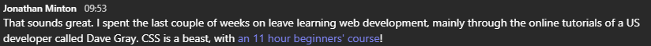

No feedback found for this session
CSS and Javascript for non-web developers
skills
beginner
CSS
Javascript
Overview
- CSS and Javascript are central topics for web developers
- As web tech dominates analytic tech, they’re increasingly of interest to analysts and other knowledge workers
- e.g. basically everything is built on browsers (esp. Chromium)
- specific examples here are mainly R-ish
- theme-ing Shiny, Rmarkdown, and similar
- building custom Power BI visuals
- the take-aways are generic
- it’s useful to separate content and style and scripting
Usual words of warning
- No claims about expertise here
- this is a beginner’s session by a beginner 
- definitely no stupid questions in this context
- it’s also an overview, rather than anything more in-depth
- I wouldn’t expect to be that confident around CSS after just this session
- … but it’s a start
A view from web 1.0
Web 1.0 to whatever we’ve got now
A view from web 1.0
- written in HTML
- mixture of content and style and scripting
<font face="Helvetica, Arial" size="2">
<font color="#000000">
"NASA is deeply committed to spreading the unique knowledge that flows from its aeronautics and space research...."
</font>
</font>The stars look very different, etc, etc
- the 2023 version is still written in HTML
- much longer (10x)
- but no style information
- and plenty of linked javascript
<div class="margin-bottom-2">
<h3 class="heading-16 line-height-md">NASA Kennedy Ready for Artemis II Moon Mission Ground Systems Testing</h3>
</div>
Where’s the style coming from
- this atrocity
- linked from the HTML page
- gives styling info for all the elements included on the page
Minifying
- CSS (and JavaScript) are downloaded by the browser
- the larger the code, the slower the site
- this is a huge problem
- minifying is common - reducing the size of the code improves performance
Unminifying
.bg-carbon-black {
background-color: #000;
}
.bg-spacesuit-white {
background-color: #fff;
}
.bg-nasa-red {
background-color: #f64137;
}- selector (what does this style apply to?)
- declaration (which properties and which values?)
- look at nasa_css_demin.css
So why so complicated?
- there are lots of things that can be styled with CSS
- that makes things potentially complicated
- but it also means that styling can be both precise and very radical
- from bare text to something really nice
- growing ambitions from c.2000-ish / and a bit later
- mad impressive CSS
Let’s have a play with something simpler
Elements?
-
<h3 class="heading-16 line-height-md">-
name =
h3 -
class =
heading-16 line-height-md
-
name =
Style?
h3 {
color: hotpink;
text-align: right;
}
.key-word{
color: red;
text-shadow: 2px 2px #558abb;
}
.glossary{
background-color: white;
color: blue;
font-size: 150%;
}
Lack of style
.horrid {
animation: blinker 0.1s linear infinite;
}
@keyframes blinker {
50% {
opacity: 0;
}
}Why does this help?
- the dream of the semantic web
- CSS = cascading style sheets
- granular control over styling
- strategy for managing complexity
- break out all the styling information into one place
- get it away from the content
An application: inline styling
- I’ll style this text with some css
- I’ll style this text with some css
I'll <span style = "color: red"> style this text with some css</span>An application: linked CSS
- we could link a CSS file via the yaml header of this page
format:
revealjs:
theme: [default, custom.scss]- we could style a single element with inline CSS
.reveal .slide-logo {
height: 85px !important;
width: 300px!important;
max-width: unset !important;
max-height: unset !important;
}- and we can add to that single styling
.reveal h2 {
color: red;
}Five minutes of Javascript
- scripting language
- excellent integration with HTML and CSS
- really powerful integration with Rmarkdown via
htmltools
JS in Shiny
Custom BI visualisations
Final
- content and style and scripting